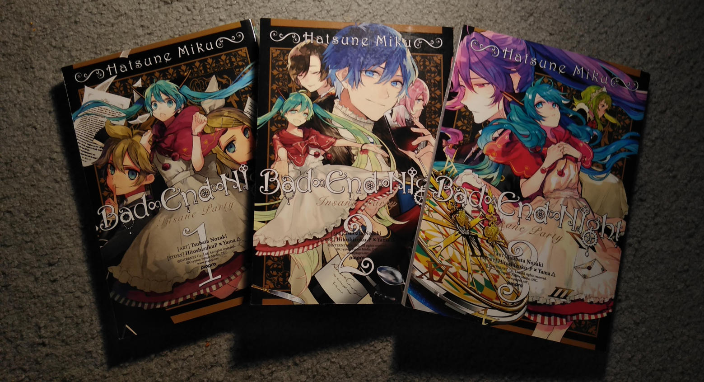
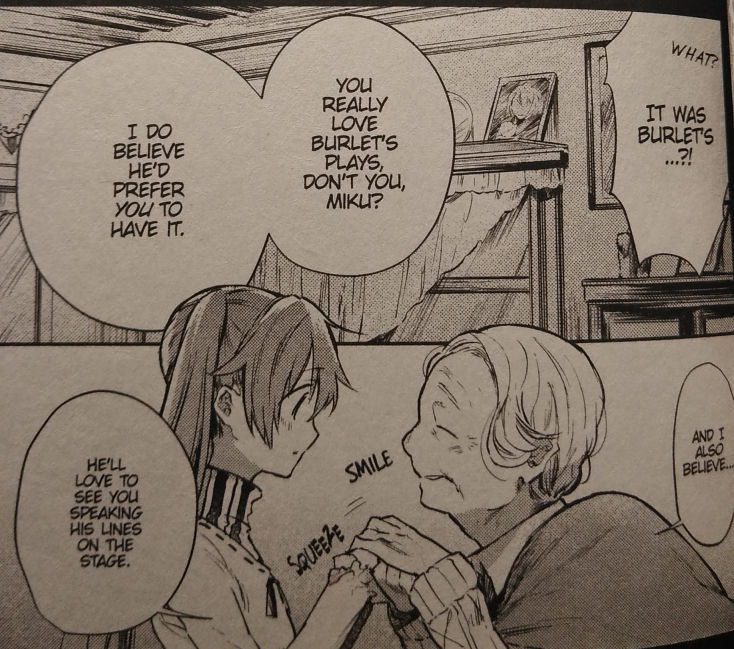
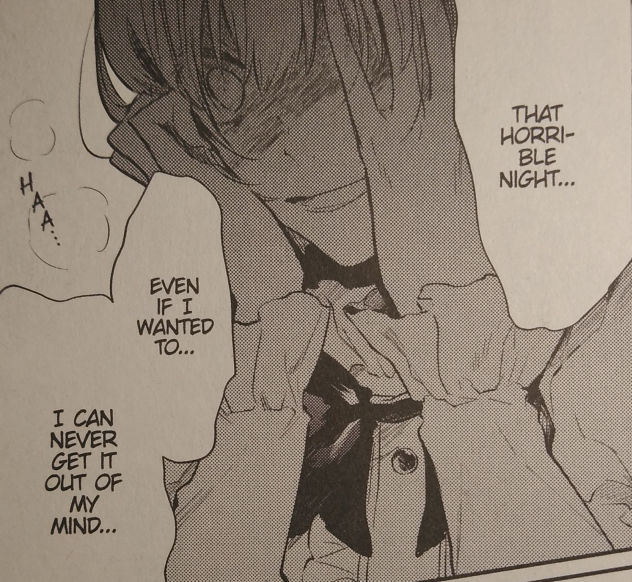

"That was... a truly magnificent night."
Bad∞End∞Night... a wildly popular song in a compilation album-turned-series. Coincidentally, it is the only song in the series I really like. The manga fleshes out its world(s) decently, but even if you've listened to the songs, it takes a few turns that aren't telegraphed to anyone but Hitoshizuku×Yama△, the writer and producer.
I received this set as a surprise Christmas gift from my dearest Tip. I really can't thank her enough. She's sent me a pile of books over the course of the pandemic.
The story goes a little something like this: as is revealed in "EveR ∞ LastinG ∞ NighT," the eccentric characters are actually actors performing a legendary play known as Crazy ∞ Night. The theatre company they work under is named after the famed, mysterious playwright who penned it, though their shows have declined in popularity due to competition with film. The members bank on Crazy ∞ Night's success to keep the company afloat and, alongside advertising the discovery of the script itself, they cast an aspiring actress from the playwright's village as the lead role to generate buzz. The marketing strategy is revealed to our innocent actress in a letter she finds after perfoming the first act, and her confrontation with the troupe leads to an incident that can only be undone in the fictional world of Crazy ∞ Night! Len and Rin are the only ones whose bodies are physically altered in this world, for some reason. (But it's cute so...)
It's a pretty solid set-up, no? It's just that the plot rides on misunderstandings between the characters and by the time this information is pieced together, it feels like the preceding chapters are from a different manga. The magic/fantasy elements are never explained, though the playwright's involvement is kind of funny. Weird, but funny. The character interactions are great and you get to see a range of emotions and motivations from nearly every character; Miku's aggression is played up to generate tension among the cast, but otherwise she comes from a place of reason. Personally a big fan of dry jerk Len who is later rewarded for his suspicions. The art is quite nice, especially for the artist's first serialized manga. Tsubata Nozaki is better known as an illustrator than a mangaka, so while the pages are well-drawn, a handful of panels don't flow well and there is a serious lack of motion/action. Not BAD, just more on the illustrative side. All in all, a short and sweet read that I would recommend to any VOCALOID/Hitoshizuku×Yama△ fan.
A small issue with the English translation is that often many characters will speak at once, and while it would be easier to identify the characters' mannerisms in Japanese, everyone speaks indistinctive British English with 20th-century slang sprinkled throughout.


If you're interested:
Back...